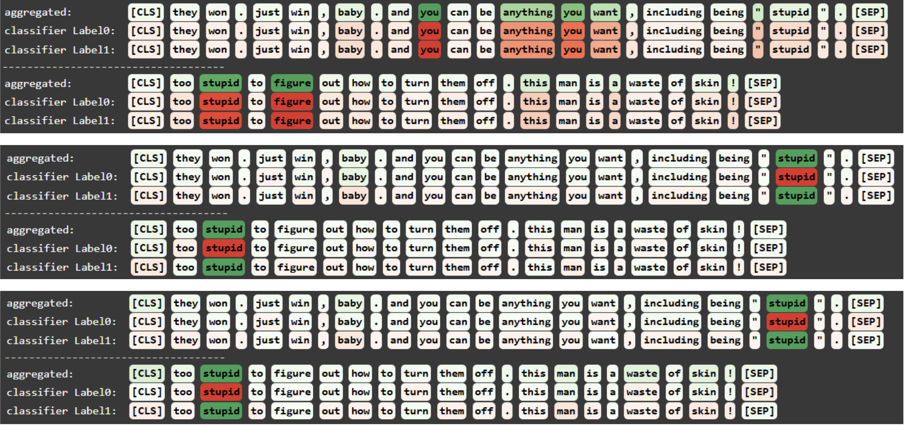

Projects

Spurious Feature Analysis
Studied BERT’s reliance on spurious features using counterfactual data and token-level interpretability tools.

EMG-to-QWERTY Neural Interface
Extended Meta’s EMG decoding pipeline with improved preprocessing and modeling for real-time character prediction.
More on GitHub
Check out my other projects, including RAG pipelines, LLM interpretability, and deep learning tooling.